Protégé
Learning outcomes:
After completing this lesson you should be able to:
- Use the Protégé software for defining a class hierarchy.
- Use Protégé to define properties and their characteristics.
- Use a reasoner with Protégé to compute inferences.
- Explain the difference between open world reasoning and closed world reasoning in the context of Protégé.
Installing Protégé 5.5.0
It is straightforward to install the latest version of Protégé on your own computer. At http://protegeproject.github.io/protege/ you will find all the instructions you need.
Creating an ontology
On starting Protégé you will see something like this:
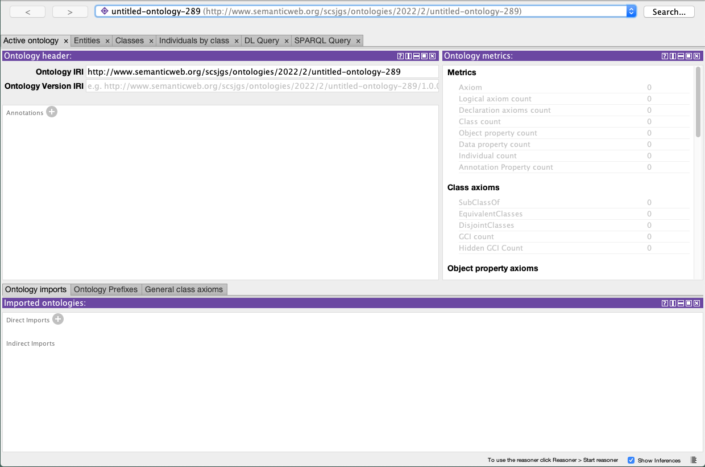
Fig 4.3.1. A screenshot of the Protégé application window. Please see the full text description below.
Select for full text description of screenshot 4.3.1.
This screenshot shows what the Protégé application window looks like when you open it up. The panel on the upper left has the Active ontology tab open. The panel on the upper right is for Ontology metrics. The panel on the bottom has the Ontology imports tab open.
Note that the top half of the window has several tabs, including:
- Active ontology,
- Entities,
- Classes,
- Individuals by class.
Make sure the Active ontology tab is selected and by clicking on the + sign next to Annotations add a suitable annotation:
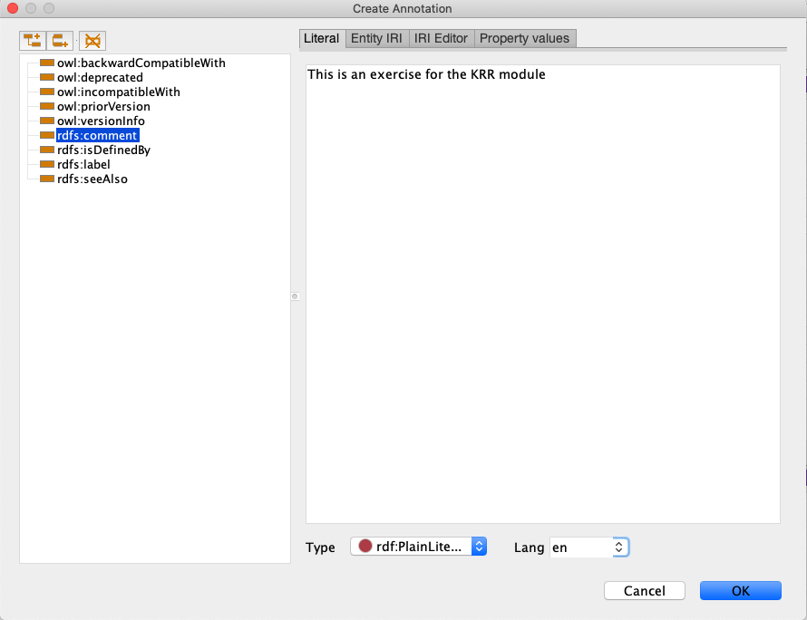
Fig 4.3.2. A screenshot of the Protégé application window. Please see the full text description below.
Select for full text description of screenshot Fig 4.3.2.
This screenshot shows the Create Annotation window that opens after you select the plus icon next to Annotations. Here you can add a suitable annotation in the text box on the right hand side.
Create some classes
- Select the Classes tab which should bring up the Class hierarchy.
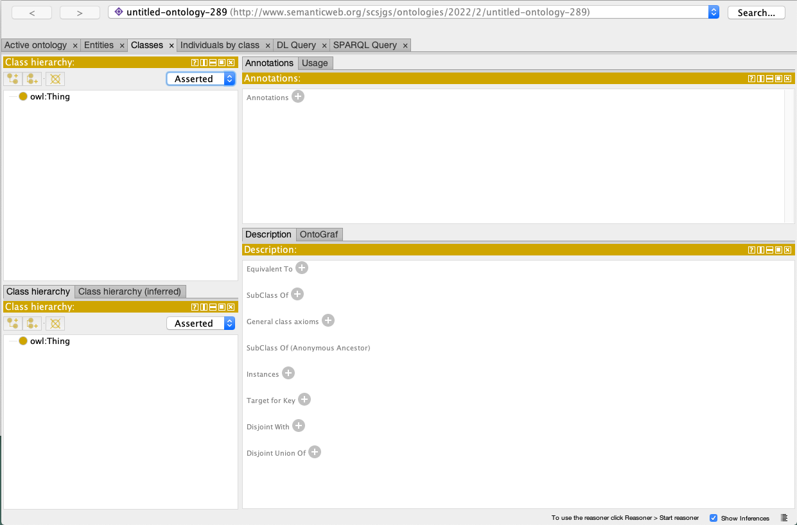
Fig 4.3.3. A screenshot of the Protégé application window. Please see the full text description below.
Select for full text description of screenshot 4.3.3.
This screenshot has the Classes tab open. There are two Class hierarchy panels on the left-hand side. On the upper right is the Annotations panel and below this is the Description panel.
-
Select Thing (the top element of the hierarchy).
-
Select the Add-subclass icon just above Thing and add a new class:
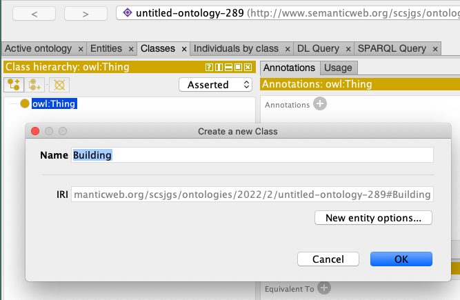
Fig 4.3.4. A screenshot of the Protégé application window. Please see the full text description below.
Select for full text description of screenshot 4.3.4.
This screenshot shows what happens after you select Thing, the top element of the hierarchy, and then select the Add sub-class icon above Thing and add a new sub-class. A Create a new Class panel pops up with a text box to enter a new Class name.
-
Protégé provides a very flexible interface in which you are able to control the arrangement of individual windows. Windows can be split horizontally or vertically as well as floated off separately from the main window. Some of this flexibility can be confusing for beginners, but you are encouraged to explore the various features.
-
Add further classes through adding sibling classes and subclasses so that you arrive at the following (but do not worry if the ordering of siblings is different).
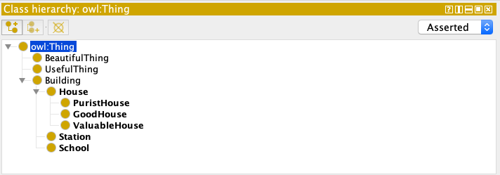
Fig 4.3.5. A screenshot of the Protégé application window. Please see the full text description below.
Select for full text description of screenshot 4.3.5.
This screenshot shows the Class hierarchy panel and the class hierarchy after numerous sibling classes and sub classes have been added.
The hierarchy shown is:
- owl:Thing
- BeautifulThing
- UsefulThing
- Building
- House
- PuristHouse
- GoodHouse
- ValuableHouse
- Station
- School.
- House
Adding properties
Informally we want to say the following:
- A valuable house is one which is near a school and a station.
- A good house is one in which everything is useful or beautiful.
- A purist house is one in which everything is useful and beautiful.
Beware of the language here. If we say something is close to a school and a station we generally expect the school and the station to be different things. We certainly would not insist that they have to be the same thing. If we say everything is useful and beautiful we do mean that any single thing is both useful and also beautiful.
Instead of the Classes tab, you need to select the Entities tab. When you do this and select the top item in the Object property hierarchy, owl:topObjectProperty, you should see this:
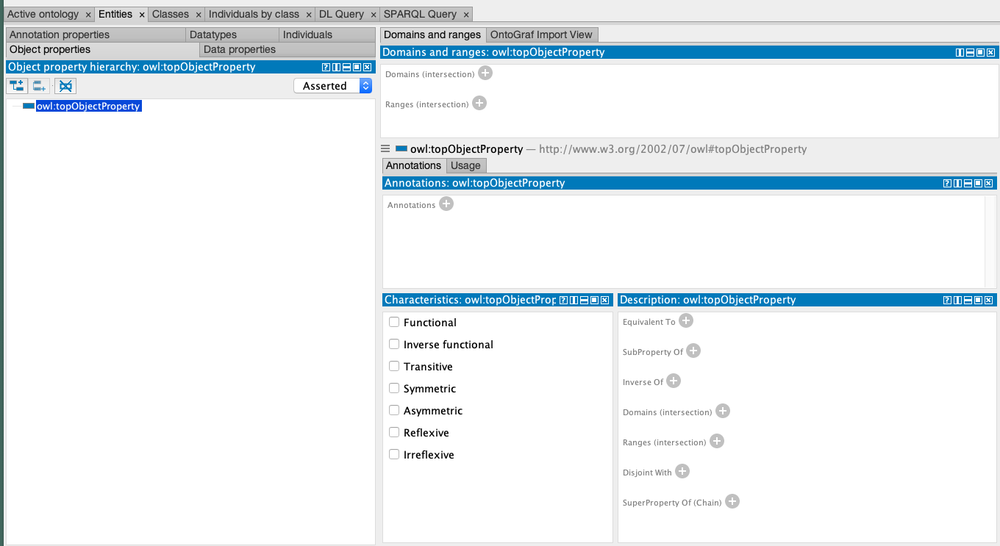
Fig 4.3.6. A screenshot of the Protégé application window. Please see the full text description below.
Select for full text description of screenshot 4.3.6.
This screenshot shows the Entities tab open. On the left-hand side the Object properties panel is open and the top item in the object property hierarchy, owl:topObjectProperty, is selected. On the right-hand side there are four further panels open in this view. At the top is the Domains and ranges panel. In the centre is the Annotations panel. At the bottom the Characteristics and Description panels are side by side.
Note that in this view you can see the seven characteristics functional, inverse functional, transitive, etc, which we studied earlier. There are various kinds of property in OWL. Here we use object properties which correspond to roles in description logic relating individuals to individuals.
You can create a new sub-property by clicking on the leftmost of the three icons which you can see here.
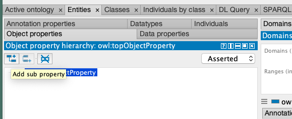
Fig 4.3.7. A screenshot of the Protégé application window. Please see the full text description below.
Select for full text description of screenshot 4.3.7.
This screenshot shows the Entities tab open, focusing on the Object properties panel. There are three icons on the panel toolbar. The icon on the far left, Add sub property, should be selected.
Create the two properties isInside and isCloseTo, which are siblings of each other.
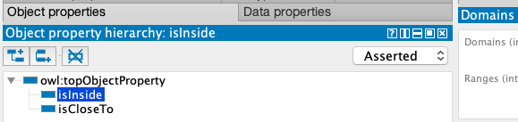
Fig 4.3.8. A screenshot of the Protégé application window. Please see the full text description below.
Select for full text description of screenshot 4.3.8.
This screenshot focuses on the Object properties panel. After selecting the add sub-property icon, two sub-properties, isInside and isCloseTo, have been added. These are siblings in the hierarchy under owl:topObjectProperty.
Characteristics of properties
Next we want to define the property contains as being inverse to isInside. The idea is that \(x\) isInside \(y\) is the same as \(y\) contains \(x\).
- Select isInside and click on the + sign next to Inverse Of.
- You can then create the contains property which is the inverse of isInside.
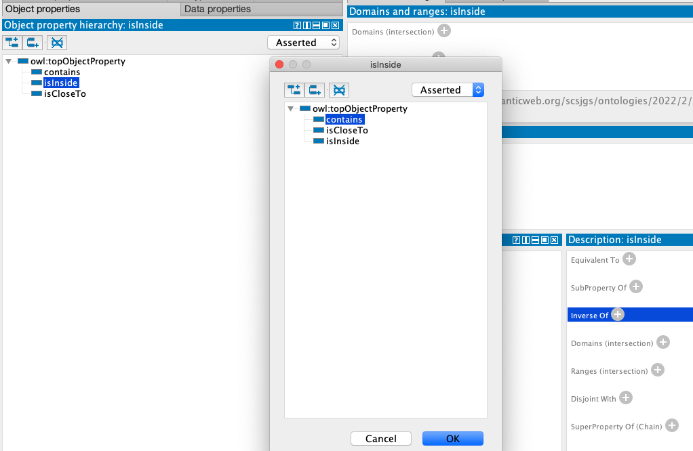
Fig 4.3.9. A screenshot of the Protégé application window. Please see the full text description below.
Select for full text description of screenshot 4.3.9.
This screenshot shows the window that is displayed when the sub-property isInside is selected. The + icon next to InverseOf in the Description panel on the lower right-hand side is also selected. You can then create the contains property which is the inverse of isInside.
- Tick the appropriate boxes to make isInside and contains both transitive.
- Should isCloseTo be transitive? No -- can you see why?
- Let's make isCloseTo symmetric:
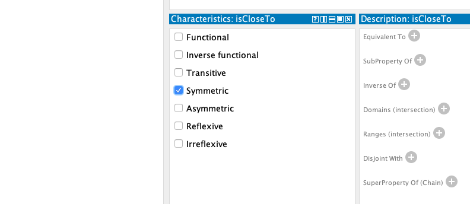
Fig 4.3.10. A screenshot of the Protégé application window. Please see the full text description below.
Select for full text description of screenshot 4.3.10.
This screenshot shows the Characteristics and Description window when the property isCloseTo is selected. The checkbox Symmetric in the Characteristics panel has been selected.
Using the reasoner
If the isCloseTo property is symmetric, it must be its own inverse. Use the reasoner to check this. The way this appears may be different depending on which operating system you are using.
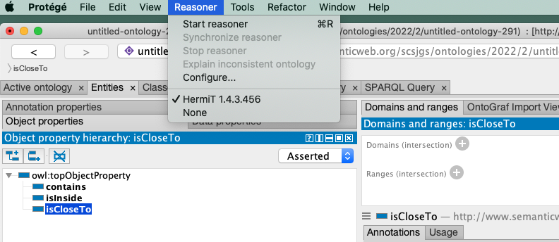
Fig 4.3.11. A screenshot of the Protégé application window. Please see the full text description below.
Select for full text description of screenshot 4.3.11.
This screenshot shows the drop down Reasoner menu on the Protégé application. Use the reasoner to check whether the isCloseTo property that is symmetric is its own inverse. To do this select Start reasoner if this is the first time you’ve used reasoner. If it’s not the first time select Synchronize reasoner.
The first time you use the reasoner you need to select Start Reasoner; subsequently it will be Synchronise Reasoner.
After using the reasoner you may need to click again on isCloseTo in the hierarchy before you get to this:
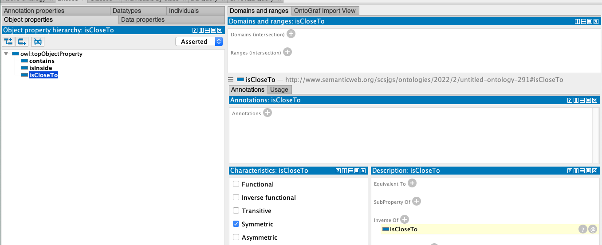
Fig 4.3.12. A screenshot of the Protégé application window. Please see the full text description below.
Select for full text description of screenshot 4.3.12.
This screenshot shows the isCloseTo property in the Object properties selected after using the reasoner. The Object properties panel is on the left-hand side and there are four panels on the right-hand side: Domains and ranges is at the top, Annotations in the centre, with the Characteristics* and **Description panels below, side by side.
The key part is here:
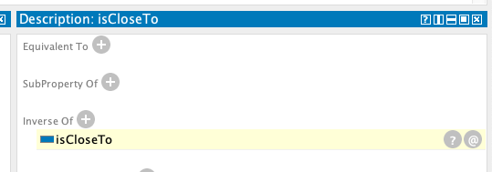
Fig 4.3.13. A screenshot of the Protégé application window. Please see the full text description below.
Select for full text description of screenshot 4.3.13.
This screenshot shows a close-up of the Description panel after running the reasoner. The reasoner has deduced that isCloseTo is inverse of itself. If selected the ? icon on the right-hand side reveals an explanation.
The reasoner has deduced that isCloseTo is inverse to itself. If you click on the ? you will get an explanation of the reasoning behind the deduction. In this case the explanation is very short.
Restrictions
Next we want to say that a valuable house must be close to a school.
This means the class ValuableHouse is a subclass, as follows if we use the notation of description logic:
- In Protégé you need to go back to the Classes tab and select ValuableHouse from the class hierarchy.
- Now click on the + where it says SubClass Of. In the hierarchy we have already ensured that:
but we are about to add another subclass relationship.
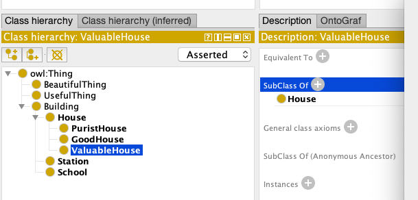
Fig 4.3.14. A screenshot of the Protégé application window. Please see the full text description below.
Select for full text description of screenshot 4.3.14.
This screenshot shows the Class hierarchy tab with ValuableHouse selected on the left-hand side. On the right-hand side is the Description panel. Select the + icon next to SubClass Of to add a new subclass relationship.
- Select the Object restriction creator in the window that pops up.
- The Restricted property should be isCloseTo.
- The Restriction filler should be School.
-
The Restriction type should be Some (existential).
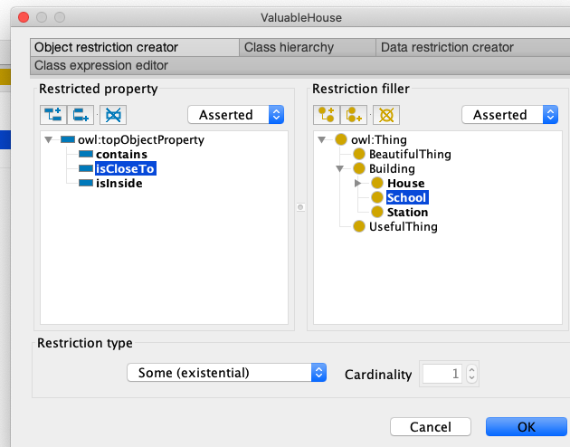
Fig 4.3.15. A screenshot of the Protégé application window. Please see the full text description below.
Select for full text description of screenshot 4.3.15.
This screenshot shows the window that pops up after selecting the + icon next to SubClass Of on the Description panel. Select the Object restriction creator panel. This brings up the Restricted property panel on the left and the Restriction filler panel on the right-hand side. isCloseTo should be selected as the Restricted property and School as the Restriction filler. Below this the Restriction type selection should be Some (existential).
-
Note that isCloseTo some School is really just an alternative syntax. for: \(\exists\, \mathsf{isCloseTo} . \mathsf{School}\)
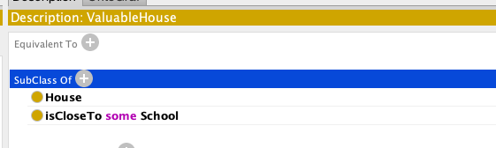
Fig 4.3.16. A screenshot of the Protégé application window. Please see the full text description below.
Select for full text description of screenshot 4.3.16.
This screenshot shows a close-up of the Description panel when the property ValuableHouse is selected and after the existential property isCloseTo, restriction fillers School and existential type some have been added in the Object restriction creator window.
-
Add the other existential restriction:
isCloseTo some Station in a similar way so you have: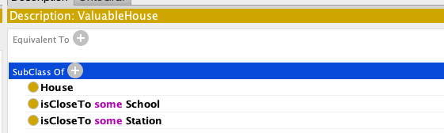
Fig 4.3.17. A screenshot of the Protégé application window. Please see the full text description below.
Select for full text description of screenshot 4.3.17.
This screenshot shows a close-up of the Description panel when the property ValuableHouse is selected and after the existential property isCloseTo, restriction fillers School and Station, and existential type some have been added in the Object restriction creator window.
-
Now create a new class which is sibling to valuable house called ExpensiveHouse.
-
Specify that it is a subclass of:
\[\exists \, \mathsf{isCloseTo} . (\mathsf{School} \sqcap \mathsf{Station})\]This time, use the Class expression editor, instead of the Object restriction creator, to enter the appropriate text to achieve this.
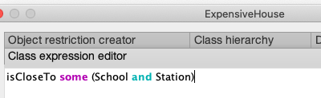
Fig 4.3.18. A screenshot of the Protégé application window. Please see the full text description below.
Select for full text description of screenshot 4.3.18.
This screenshot shows the Class expression editor of a new class ExpensiveHouse. Enter isCloseTo some (School and Station) into the Class expression editor.
Defined classes
So far our use of restriction types has asserted that:
and
This does not mean that every expensive house is a valuable house, even though:
It is certainly the case that:
but we have not said that:
In this case we can do that by asserting the equivalence:
This asserts that \(\mathsf{ValuableHouse}\) can be defined in terms of other classes.
- Back in Protégé, from Edit in the top menu, you can select Convert to defined class from the drop down menu.
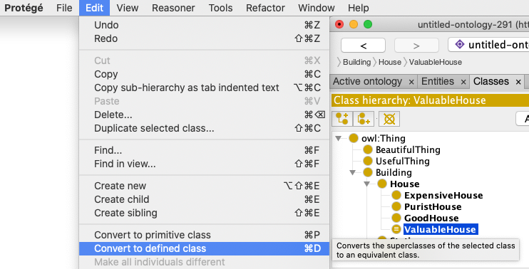
Fig 4.3.19. A screenshot of the Protégé application window. Please see the full text description below.
Select for full text description of screenshot 4.3.19.
This screenshot shows the drop down Edit menu of the Protégé application. There is a Convert to defined class option in this menu. This option 'converts the superclasses of the selected class to an equivalent class'. In the screenshot ValuableHouse is the class selected in the Class hierarchy menu.
- Also make ExpensiveHouse into a defined class.
-
The hierarchy looks like this now:
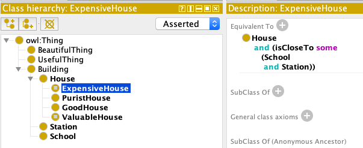
Fig 4.3.20. A screenshot of the Protégé application window. Please see the full text description below.
Select for full text description of screenshot 4.3.20.
This screenshot shows the Class hierarchy panel when ExpensiveHouse is selected. The Description panel is adjacent to it. ExpensiveHouse and ValuableHouse have been converted to defined classes. This is indicated by three horizontal bars in the dot next to the property name.
-
Now, what happens if we synchronise the reasoner?
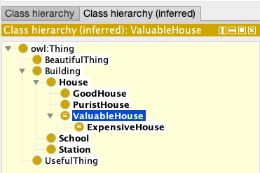
Fig 4.3.21. A screenshot of the Protégé application window. Please see the full text description below.
Select for full text description of screenshot 4.3.21.
This screenshot shows the Class hierarchy (inferred) panel after the reasoner has been synchronised. ExpensiveHouse is now a subproperty of ValuableHouse, which is selected.
Note we are looking at the inferred hierarchy here.
Adding individuals
-
Going now to the Individuals tab, it should be clear enough what you need to do to create three individuals with properties as follows:
- \(\mathsf{42\_Acacia\_Avenue}\): this is a \(\mathsf{House}\)
- \(\mathsf{Red\_House}\): this is a \(\mathsf{School}\)
- \(\mathsf{Red\_House}\): this is a \(\mathsf{School}\)
- \(\mathsf{West\_Avenue}\): this is a \(\mathsf{Station}\)
- \(\mathsf{42\_Acacia\_Avenue}\) is close to \(\mathsf{Red\_House}\)
- \(\mathsf{42\_Acacia\_Avenue}\) is close to \(\mathsf{West\_Avenue}\)
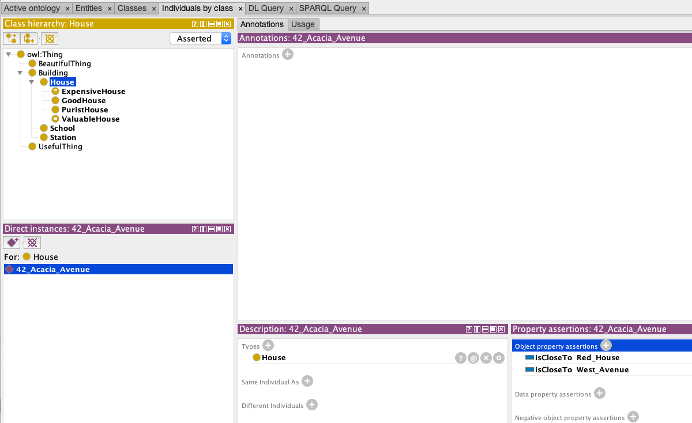
Fig 4.3.22 A screenshot of the Protégé application window. Please see the full text description below.
Select for full text description of screenshot 4.3.22.
This screenshot shows the Individuals by class tab and shows you how to create an individual. In this case the individual is 42_Acacia_Avenue, with the properties this is a House, isCloseTo Red_House and isCloseTo West_Avenue. In the upper left-hand corner is the Class hierarchy panel where House is selected. Below this is the Direct instances panel with 42_Acacia_Avenue selected. On the upper right-hand side is the Annotations panel. Below this are two panels alongside each other: the Descriptions panel is on the left-hand side and the Object property assertions panel is on the right-hand side. In the **Object property assertions panel there are two assertions: isCloseTo Red_House and isCloseTo West_Avenue.
-
The Object property assertions you need to make appear in the bottom right of the screen shot Fig 4.3.22.
-
Now synchronise the reasoner to see that 42_Acacia_Avenue is a valuable house, and by clicking on the ?, by this inference, you can get the following explanation:
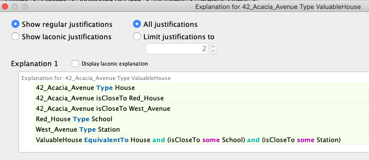
Fig 4.3.23. A screenshot of the Protégé application window. Please see the full text description below.
Select for full text description of screenshot 4.3.23.
This screenshot shows you the explanation after selecting the question mark in the reasoner after synchronising 42_Acacia_Avenue. The options Show regular justifications and All justifications are selected. The following is displayed as the explanation:
- 42_Acacia_Avenue Type House
- 42_Acacia_Avenue isCloseTo Red_House
- 42_Acacia_Avenue isCloseTo West_Avenue
- Red_House Type School
- West_Avenue Type Station
- ValuableHouse EquivalentTo House and (isCloseTo some School) and (isCloseTo some Station).
Inconsistency
One of the values of reasoning for ontologies is to be able to detect when you have created an individual with contradictory properties. It is possible in Protégé to state that a class is empty without the ontology actually being inconsistent. Although this makes sense logically, it is unlikely to be intended in practical ontology construction. You can try the following experiment and see how Protégé highlights the empty class in the class hierachy.
- Create a new class \(\mathsf{Unicorn}\).
- Assert that this class is equivalent to \(\mathsf{owl{:}Nothing}\). Note that class names are case-sensitive, so be careful not to try \(\mathsf{owl{:}nothing}\) etc.
- You should be able to run the reasoner without any fundamental objections appearing.
- Now create an individual of the class \(\mathsf{Unicorn}\). You will need a name for your unicorn.
-
Synchronise the reasoner, and you should get:
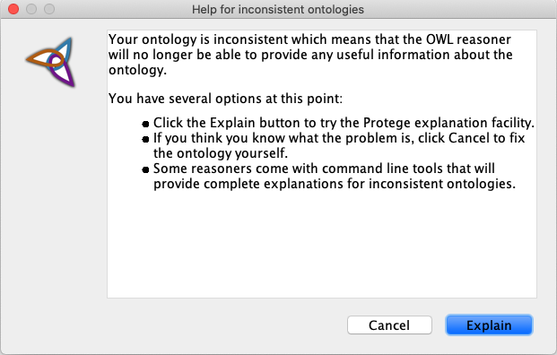
Fig 4.3.24. A screenshot of the Protégé application window. Please see the full text description below.
Select for full text description of screenshot 4.3.24.
This screenshot shows an inconsistency message after the reasoner has been synchronised for an individual of the class Unicorn. The first part of the message says: Your ontology is inconsistent which means that the OWL reasoner will no longer be able to provide any useful information about the ontology. Three options are then provided:
- 'Click the Explain button to try the Protégé explanation facility.''
- 'If you think you know what the problem is, click Cancel to fix the ontology yourself.''
- 'Some reasoners come with command line tools that will provide complete explanations for inconsistent ontologies.''
There are two buttons below this, Cancel and Explain.
We have tried to say that there are no unicorns and that there is an individual unicorn. Protégé alerts us to this inconsistency. In this case we deliberately introduced the inconsistency, but in creating complex ontologies such problems can occur and would make the ontology useless if not corrected.
Disjoint classes
In the \(\mathsf{Building}\) example above there were classes \(\mathsf{Station}\) and \(\mathsf{School}\). If we want to say that nothing is both a school and a station, Protégé provides a way to do this via the Description pane for one of the classes. Click on the +* next to Disjoint With in the Description pane for a class and you can assert that the class is disjoint from another class. If you do this, while keeping the defined class \(\mathsf{ExpensiveHouse}\):
then you will find that the reasoner objects to this as \(\mathsf{ExpensiveHouse}\) must be empty.
In developing an ontology for an area where knowledge is not fixed, it can happen that classes are initially correctly described as disjoint but as more knowledge is acquired the ontology needs to be updated. Imagine the development of an ontology where classes \(\mathsf{EggLayingAnimal}\) and \(\mathsf{Mammal}\) were designated disjoint by someone unfamiliar with the platypus and other inhabitants of the intersection of these two classes. On being introduced to one of these examples, our imaginary ontologist would need to remove the disjointness requirement and maybe create a new class:
Open world reasoning
-
Continue to develop the ontology so that the classes \(\mathsf{GoodHouse}\) and \(\mathsf{PuristHouse}\) have these definitions.
\[\mathsf{GoodHouse} \equiv \mathsf{House} \sqcap \forall\, \mathsf{contains} . (\mathsf{UsefulThing} \sqcup \mathsf{BeautifulThing})\]\[\mathsf{PuristHouse} \equiv \mathsf{House} \sqcap \forall\, \mathsf{contains} . (\mathsf{UsefulThing} \sqcap \mathsf{BeautifulThing})\]You can do this using the method shown earlier, or you can type directly in the Class expression editor which comes up if you click on the + next to Equivalent To in the Description pane like this:
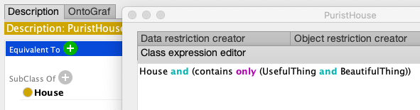
Fig 4.3.25. A screenshot of the Protégé application window. Please see the full text description below.
Select for full text description of screenshot 4.3.25.
This screenshot shows the Class expression editor if you select the + icon next to Equivalent To in the Description panel. The Class expression editor contains House and (contains only (UsefulThing and BeautifulThing))
-
Check that the reasoner deduces:
\[\mathsf{PuristHouse} \sqsubseteq \mathsf{GoodHouse}\]Remember that you have to inspect the inferred class hierarchy not the asserted one to see this.
-
Introduce some individual items which \(\mathsf{42\_Acacia\_Avenue}\) contains. For example: a piano, a dishwasher, a cat, a cactus, etc. Say that some of these are useful/beautiful or neither according to taste.
It is optional in this exercise to follow William Morris who wrote Hopes and Fears for Art, 1882 'Now unless we are musical, and need a piano (in which case, as far as beauty is concerned, we are in a bad way) …'
-
You are encouraged to play with different choices of things in 42 Acacia Avenue and the classes to which they belong. You can see if the inferred hierarchy changes depending on these choices. To take a concrete example, suppose that:
- \(\mathsf{42\_Acacia\_Avenue}\) contains a cat which is a \(\mathsf{BeautifulThing}\), and also contains a piano which is a \(\mathsf{UsefulThing}\), and we make no other assertions at all about individuals in that house.
The only things we have said are in the house are either beautiful or useful. Does \(\mathsf{42\_Acacia\_Avenue}\) get assigned to the class:
\[\mathsf{GoodHouse} \equiv \mathsf{House} \sqcap \forall\, \mathsf{contains} . (\mathsf{UsefulThing} \sqcup \mathsf{BeautifulThing})\]by the reasoner?
You should find that the answer is 'no'. Because of the open world reasoning used in Protégé and in ontologies based on description logic, this is what is expected to happen. This is because the possibility remains open that there are objects lurking in the house which are neither useful nor beautiful but which are not recorded in the ontology.
Next we see one way to assert that the house contains nothing other than a cat and a piano.
-
Create one new class called \(\mathsf{42Contents}\). The idea is that instances of this class are just the things inside \(\mathsf{42\_Acacia\_Avenue}\). You can just make this a subclass of \(\mathsf{owl{:}Thing}\) and not a subclass of any of the other classes in the ontology.
Using the Class Expression Editor assert that \(\mathsf{42Contents}\) is equivalent to two classes:
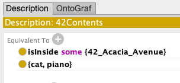
Fig 4.3.26. A screenshot of the Protégé application window. Please see the full text description below.
Select for full text description of screenshot 4.3.26.
This screenshot shows the Description panel for the class 42Contents after using the Class expression editor. Two classes that are equivalent to 42Contents are displayed: isInside some {42_Acacia_Avenue} and {cat, piano}.
We have thus ensured that:
\[\{\mathsf{cat},\, \mathsf{piano}\} \equiv \exists\, \mathsf{isInside} . \{\mathsf{42\_Acacia\_Avenue}\}.\]We have used Enumerated Classes which allow us to create a class consisting only of specified individuals.
-
The reasoner can now deduce that 42 Acacia Avenue belongs to \(\mathsf{GoodHouse}\).
Further work on Protégé
This part of the lesson has only introduced the most basic features of ontology construction. To learn more about Protégé you should consult the well-known pizza ontology example described in this document. You will find much of the first 50 or 60 pages covers issues similar to the ones already seen in this lesson. Beyond that are some useful new techniques for expressing knowledge in Protégé that we have not seen.